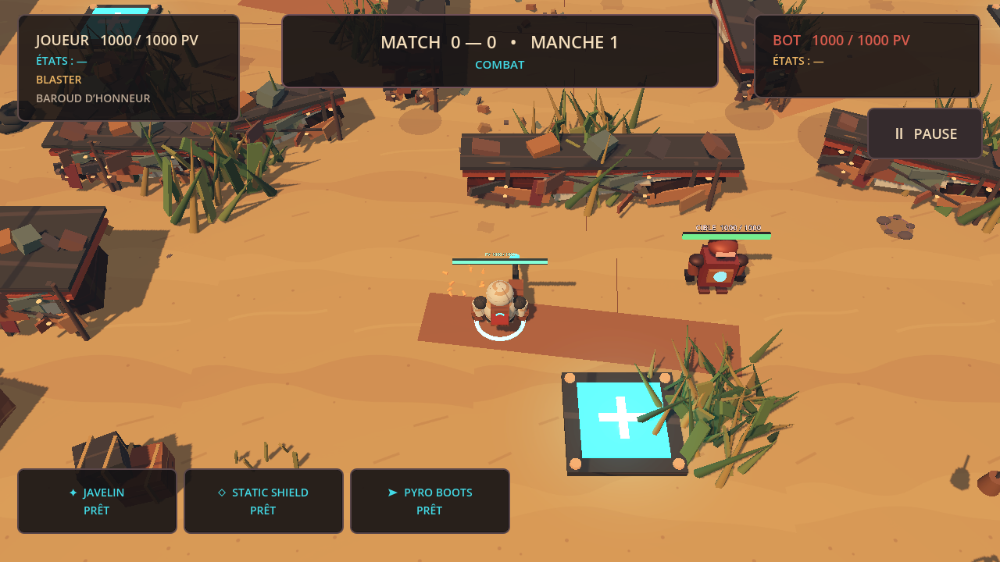

JOURNAL DU JEU / PROTOTYPE 0
À RÉCUPÉRER
DANS LE JEU.
Les derniers pushes publiés dans le dépôt du jeu, avec le détail de ce que ton prochain pull va récupérer.
VOIR LES PUSHES
JOURNAL DE DÉVELOPPEMENT / JEU01 / COMMITS PUBLIÉS
LES PUSHES
EN ATTENTE.
Les commits à récupérer sont affichés du plus récent au plus ancien. Chaque fiche montre ce que ce push ajoute au jeu.
Chargement des pushes…